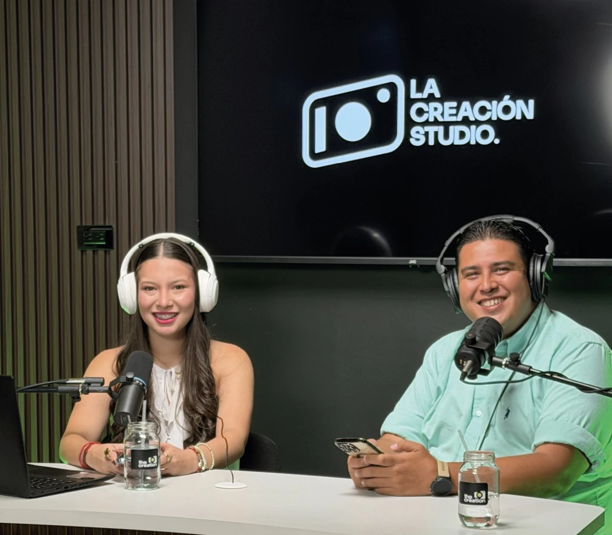
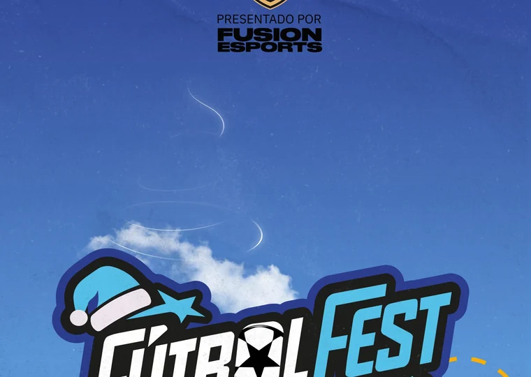
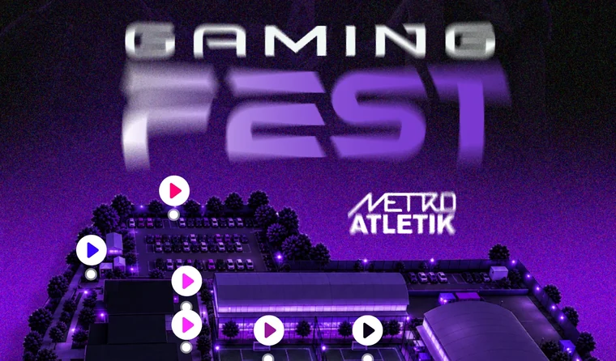
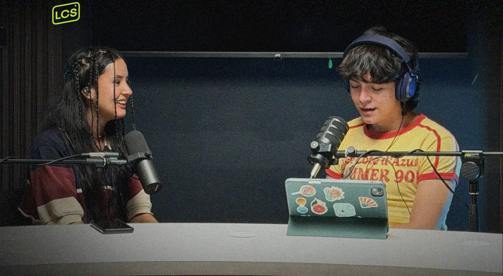
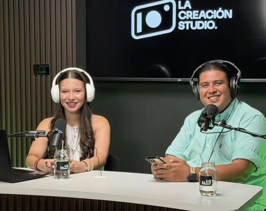
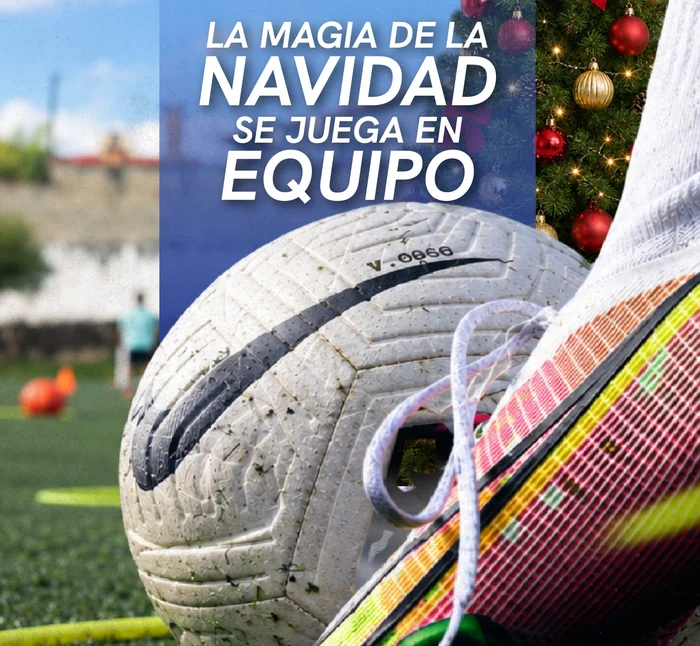
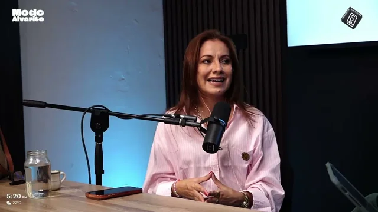
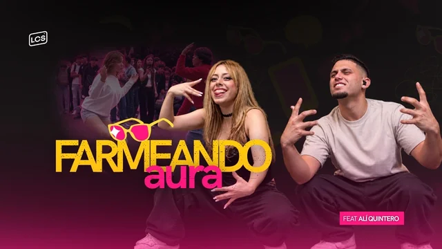
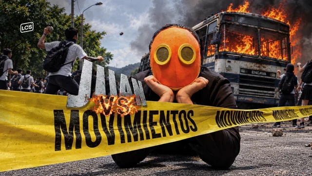
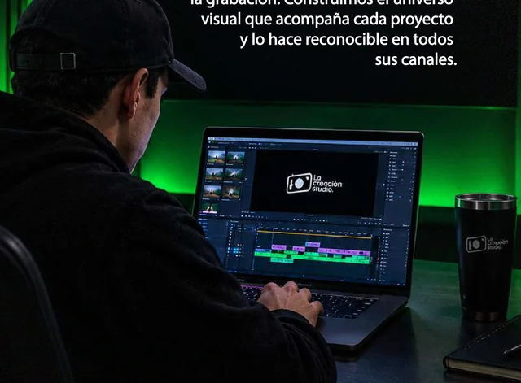

Producción audiovisual
Videos comerciales, contenido para redes, fotografía y narrativas que hacen destacar tu historia.

Combinamos estrategia, creatividad y producción para transformar ideas en experiencias que conectan con las personas.
Podcast, audiovisual, streaming, diseño y producción 360°. Una dirección creativa de principio a fin.
Videos comerciales, contenido para redes, fotografía y narrativas que hacen destacar tu historia.
Transmisiones en vivo, eventos híbridos, shows y experiencias multicámara con calidad profesional.
Identidades visuales, campañas, piezas gráficas y sistemas que le dan personalidad a tu marca.
Estrategia de contenidos, redes sociales y campañas pensadas para comunicar con intención.
Landing pages, sitios web y experiencias digitales rápidas, claras y diseñadas para convertir.
Producción, grabación, edición y dirección visual para formatos que merecen ser vistos y escuchados.
Proyectos, producciones y experiencias de La Creación Studio.

Descubre su edición navideña, la experiencia y cómo formar parte.

Conoce la propuesta del festival y sus espacios.

El contenido sucede en directo.

Voces, personalidades y formatos que conectan con nuevas audiencias.
Jugar, compartir y divertirse. La edición navideña reúne a pequeños futbolistas, familias y marcas en MetroAtletik, Mérida.
Categorías 2017, 2018, 2019 y 2020.

Un encuentro pensado para los pequeños jugadores, sus equipos y sus familias.
Momentos para jugar, compartir y vivir el deporte dentro y fuera de la cancha.
Producción y cobertura audiovisual para conectar el evento con más espectadores.
Podcasts originales, entrevistas y transmisiones de La Creación Studio.
Visitar el canal en YouTube





En La Creación Studio creemos que las grandes ideas necesitan dirección, técnica y un equipo dispuesto a hacerlas realidad.
Somos un estudio creativo con enfoque integral en producción audiovisual, contenidos, diseño y comunicación.

Conocemos tu historia, tus objetivos y lo que necesitas comunicar.
Transformamos tus objetivos en una propuesta creativa y estratégica.
Damos vida a la idea con ejecución visual, técnica y narrativa.
Ponemos la creatividad en movimiento y preparamos el resultado para su audiencia.
Cuéntanos qué tienes en mente. Estamos listos para producir tu próximo proyecto.
eli@lacreacionstudio.com